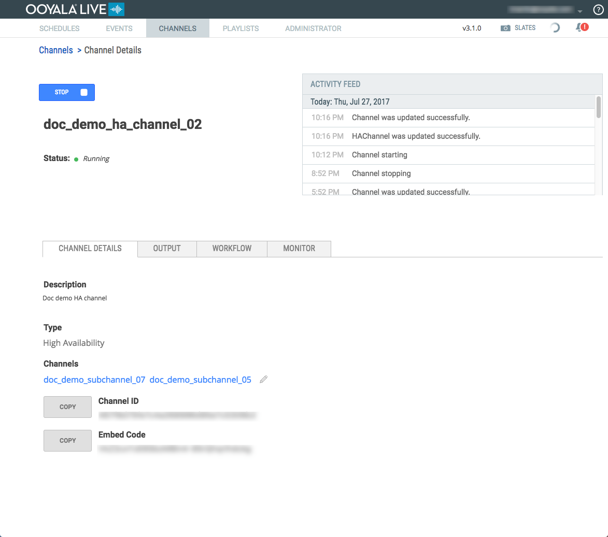
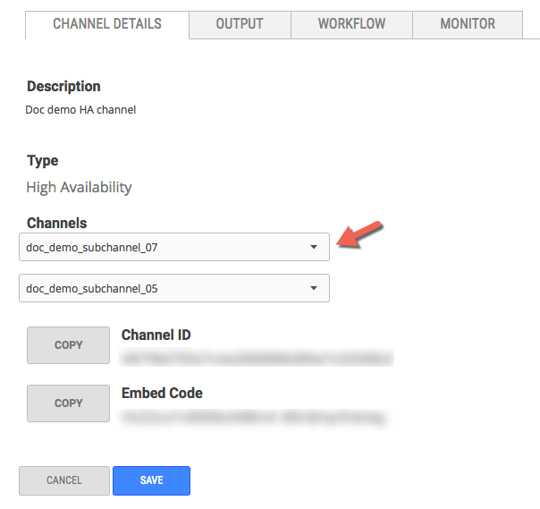
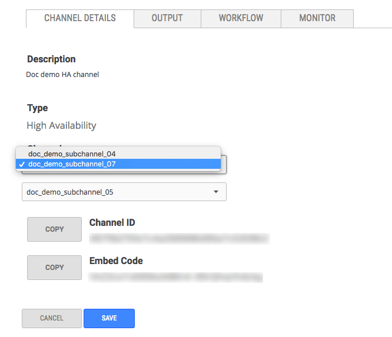
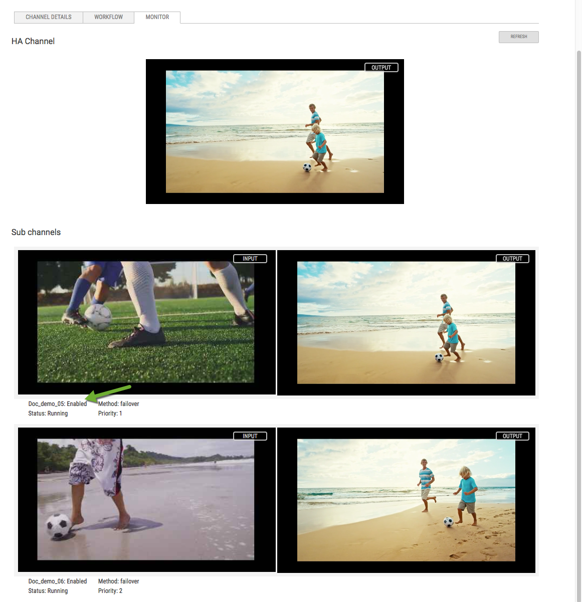

Swap sub-channels of an HA channel without stopping any of the channels
You must have at least 2 channels, either 24x7 or Adhoc, configured.
To swap channels within an HA channel all channels must be in the same state. For
hot swapping a channel all the the channels must be in a running
state.
Considerations when swapping sub-channels:
- If you are using DRM enabled channels, both sub-channels must use the same
DRM packaging output profile.
- In order to preserve scheduled HA events when swapping out subchannles,
there can't be any events scheduled in the future on the channel you are
swapping into the HA channel.
-
Got to the Channel Details page for the HA
channel.

-
Click the edit icon next to the sub-channels.
-
Click the dropdown list for the channel you want to swap.
Important: The top dropdown list is the Priority 1 channel and the
second dropdown list is the Priority 2 channel.
All channels available for swapping are listed for both the
Priority 1 and the Priority 2 channel.

-
Click SAVE.
Go to the monitor tab of the HA channel and verify that the channel was swapped and the correct
one is playing.
Tip: If the new sub-channel isn't playing in the
HA Channel monitor window, click
REFRESH.

Note:
- The Priority 1 sub-channel streams the content of
the HA channel.
- The Priority 2 sub-channel is in a warm standby
mode in case the Priority 1 sub-channel
fails.
Important: Swapping out a sub-channel does not stop the channel. To
avoid transcoding charges, stop any channel that is no longer one of the HA
sub-channels that you need.